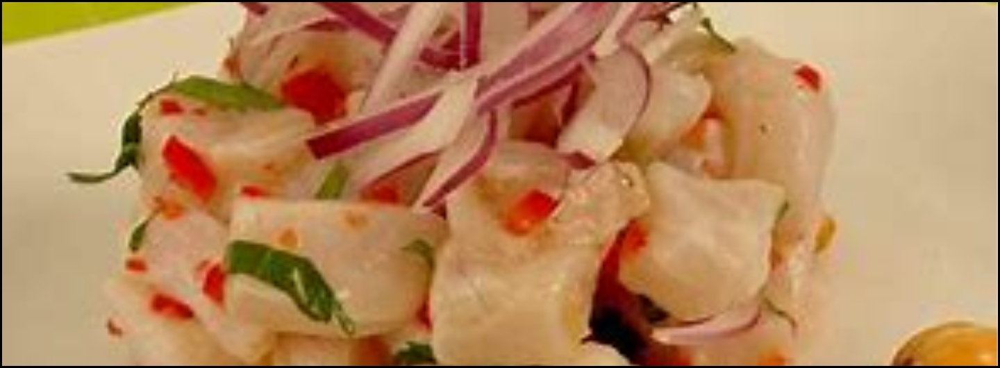
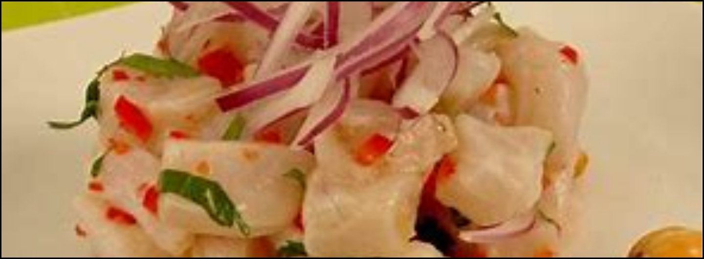

Most popular
Ceviche
 

The Ceviche, is considered the "Plato Bandera" of Peru. We present the recipe.
Ingredients (3 to 4 servings)
- 1 kilo of fish fillet (preferably sole)
- 1 cup freshly squeezed lemon juice
- 2 red onions
- 3 aji limo peppers (a few extra for garnish)
- 3 cloves of garlic
- 1 teaspoon kion juice
- Salt
- Chopped coriander on a stick
- 2 ice cubes
Accompaniment
- Lettuce leaves
- Shelled and cooked sweet potato
- Cooked yellow sweet potato
- Toasted Cancha serrana

Preparation (25 minutes)
- Cut two aji limos into small squares. Remove seeds and veins.
- Cut the onions into julienne strips.
- Crush the garlic cloves.
- Mix the lemon juice with the crushed garlic, the three broken coriander sprigs and the teaspoon of kion juice. Set aside for 3 minutes.
- Cut the fish fillets into cubes. Place in a bowl and season with salt. Set aside for 1 minute.
- Rub a split aji limo pepper against the bowl containing the fish. Add the diced lime peppers, julienned onions (reserve some onion for presentation), and add the ice cubes. Stir and pour in the lime juice, straining it through a sieve. Add the chopped coriander and carefully stir in.
- Serve immediately with the reserved onion. Accompany with lettuce, sweet potato, corn and cancha serrana. You can garnish with sliced aji limo peppers and chopped coriander.
Suggestions:
- You can increase or decrease the amount of lime juice if you want the ceviche to be tangy or juicier.
- If you love it spicy, you can keep the seeds and veins of the aji limo pepper, which you will then rub against the bowl where the fish is.
- The ice cubes add freshness and balance the acidity of the lemon.
- If you want the corn to be very tasty, cook it with sugar, aniseed and a dash of lemon juice. This last ingredient will help the corn keep its colour and prevent it from turning yellow.